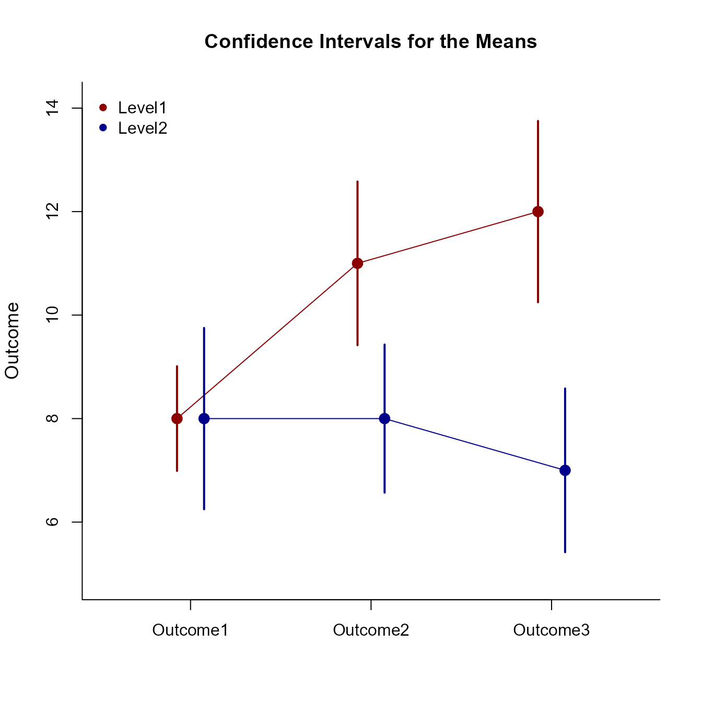

Mixed Traditional Summary Example
Source:vignettes/MixedTraditionalSummaryExample.Rmd
MixedTraditionalSummaryExample.RmdThis page examines a two-factor mixed design (one between-subjects and one within-subjects factor) using summary statistics input, focusing on omnibus and simple effects analyses.
Preliminary Tasks
Data Entry
This code inputs the variable summaries and creates a summary table.
Outcome1 <- c(N = 10, M = 8.000, SD = 1.414)
Outcome2 <- c(N = 10, M = 11.000, SD = 2.211)
Outcome3 <- c(N = 10, M = 12.000, SD = 2.449)
MixedSummaryL1 <- construct(Outcome1, Outcome2, Outcome3, class = "wss")
Outcome1 <- c(N = 10, M = 8.000, SD = 2.449)
Outcome2 <- c(N = 10, M = 8.000, SD = 2.000)
Outcome3 <- c(N = 10, M = 7.000, SD = 2.211)
MixedSummaryL2 <- construct(Outcome1, Outcome2, Outcome3, class = "wss")
MixedSummary <- combine(L1 = MixedSummaryL1, L2 = MixedSummaryL2, class = "wss")This code creates correlation matrices.
Outcome1 <- c(1.000, .533, .385)
Outcome2 <- c(.533, 1.000, .574)
Outcome3 <- c(.385, .574, 1.000)
MixedCorrL1 <- construct(Outcome1, Outcome2, Outcome3, class = "corr")
Outcome1 <- c(1.000, .408, .164)
Outcome2 <- c(.408, 1.000, .553)
Outcome3 <- c(.164, .553, 1.000)
MixedCorrL2 <- construct(Outcome1, Outcome2, Outcome3, class = "corr")
MixedCorr <- combine(L1 = MixedCorrL1, L2 = MixedCorrL2, class = "corr")Summary Statistics
This code confirms the descriptive statistics from the summary tables.
(MixedSummary) |> describeSummary()$`Summary Statistics for the Data: L1`
N M SD
Outcome1 10.000 8.000 1.414
Outcome2 10.000 11.000 2.211
Outcome3 10.000 12.000 2.449
$`Summary Statistics for the Data: L2`
N M SD
Outcome1 10.000 8.000 2.449
Outcome2 10.000 8.000 2.000
Outcome3 10.000 7.000 2.211
(MixedCorr) |> describeCorrelations()$`Correlation Matrix for the Variables: L1`
Outcome1 Outcome2 Outcome3
Outcome1 1.000 0.533 0.385
Outcome2 0.533 1.000 0.574
Outcome3 0.385 0.574 1.000
$`Correlation Matrix for the Variables: L2`
Outcome1 Outcome2 Outcome3
Outcome1 1.000 0.408 0.164
Outcome2 0.408 1.000 0.553
Outcome3 0.164 0.553 1.000Plot the means and confidence intervals for the design as a whole.
(MixedSummary) |> plotFactorial(MixedCorr, col = c("darkred", "darkblue"))
legend("topleft", inset = .01, box.lty = 0, pch = 16, legend = c("Level1", "Level2"), col = c("darkred", "darkblue"))
Analyses of the Omnibus Effects
The omnibus analysis usually consists of an Analysis of Variance.
Source Table
Get the source table associated with the main effects and the interaction.
(MixedSummary) |> describeFactorial(MixedCorr)$`Source Table for the Model: Between Subjects`
SS df MS
Blocks 106.667 1.000 106.667
Subjects 151.951 18.000 8.442
$`Source Table for the Model: Within Subjects`
SS df MS
Measures 30.000 2.000 15.000
Measures:Blocks 63.333 2.000 31.667
Residual 97.994 36.000 2.722Proportion of Variance Accounted For
Get estimates of the proportion of variance accounted for by each effect (along with their confidence intervals).
(MixedSummary) |> estimateFactorial(MixedCorr)$`Proportion of Variance Accounted For by the Model: Between Subjects`
Est LL UL
Blocks 0.412 0.114 0.595
$`Proportion of Variance Accounted For by the Model: Within Subjects`
Est LL UL
Measures 0.234 0.040 0.385
Measures:Blocks 0.393 0.163 0.528Significance Tests
Finally, test the various effects for statistical significance.
(MixedSummary) |> testFactorial(MixedCorr)$`Hypothesis Tests for the Model: Between Subjects`
F df1 df2 p
Blocks 12.636 1.000 18.000 0.002
$`Hypothesis Tests for the Model: Within Subjects`
F df1 df2 p
Measures 5.511 2.000 36.000 0.008
Measures:Blocks 11.633 2.000 36.000 0.000Analyses of the Simple Effects
As a follow-up to an Analysis of Variance, it is cusotmary to examine the simple effects (essentially a single-factor ANOVA separately across the levels of another factor).
Source Table
Get the source tables separately for the simple effects.
(MixedSummary) |> describeEffectBy(MixedCorr)$`Source Table for the Model: L1`
SS df MS
Subjects 75.302 9.000 8.367
Measures 86.667 2.000 43.333
Error 40.667 18.000 2.259
$`Source Table for the Model: L2`
SS df MS
Subjects 76.649 9.000 8.517
Measures 6.667 2.000 3.333
Error 57.326 18.000 3.185Proportion of Variance Accounted For
Get an estimate of the proportion of variance account for by the simple effect (and the confidence interval for that estimate).
(MixedSummary) |> estimateEffectBy(MixedCorr)$`Proportion of Variance Accounted For by the Model: L1`
Est LL UL
Measures 0.681 0.389 0.772
$`Proportion of Variance Accounted For by the Model: L2`
Est LL UL
Measures 0.104 0.000 0.282